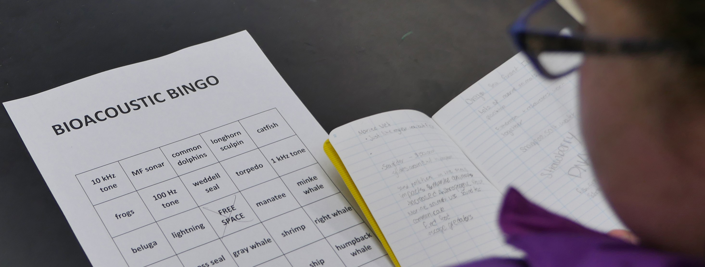

I am passionate about incorporating Open Science principles (version control, reproducibility, documentation) into my own work, and helping my colleagues do the same. I participated in the NOAA NMFS OpenScapes Champions Cohort in 2022 where I learned about the importance of reproducible workflows to enable us to do the best possible science and make it as equitable as possible. I now serve as a resource within the PIFSC Protected Species Division as a go-to person when folks need help with GitHub, project management tools, and co-working. I have led small group trainings in these various skills and presented on Open Science products.
Aside from reasearch, one of my favorite parts of being a scientist is sharing the joy of a career in science and recruiting and training the next generation of great scientists! Some of the outreach and service activites I have been involved with include K-12 education programs in marine science such as specialized programming for girls in marine science and engineering and wildlife science themed summer camps, individualized research opportunities and mentoring of undergraduate students, and leadership positions in graduate student-led organizations.
[Update 2024: Wow! I forgot about the existence of this blog...The formatting has changed (maybe something at Wordpress?) but it still exists so I am going to leave it here. Perhaps someday I will transfer it all to this site.]
I wanted a place to deposit notes about coding (mostly Matlab) that I come back to over and over again. This is mostly for my own use…so it is very unpolished…but here it is in case others may find it helpful.